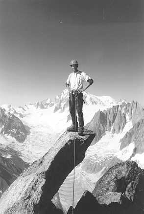

In the Easter Holiday I was phoned up (as usual) be a certain member of Corpus Christi and (as usual) invited to scale a lakeland lump of rock. Gavin and I live equal distances either side of Borrowdale. A painful 7am wake up and 7.45 departure, and we meet up in the main Keswick car park at 8.30. This place brings back memories of last January when an ice climbing trip was delayed by two hours while I tried to find the jack. We had eventually left to climb the headwall of Scales Tarn on Blencathra at 11am.... This time no such problems hinder us. Gavin is in executive mode (i.e. he has stolen his Dad's Volvo) and we are conveyed in great style to Grange. The objective? Goat Crag.
It seems perhaps illogical in retrospect that on the first decently sunny day of 1997 we should choose this north facing, overhanging and dripping crag, situated high up the hillside. Still, we are convinced that it is a 'valley crag' and we are attracted by two classic lines: DDT (HVS) and Praying Mantis (E2).
A steep ascent through woods and then up bracken slopes leads to beneath the imposing north buttress. This is the scene of Pete Livesey's classic 'Footless Crow' which, at E5 6b, was an impressive and serious climb for the early 70's. We initially plan on doing Praying Mantis immediately, but something draws us at the last minute to its easier neighbour. Obviously this is a purely ethical decision! Gavin gears up with the same attitude as one of the knights from Monty Python's 'Quest for the Holy Grail' when confronted by the 'killer rabbit'. 'Ach, give me a sword, I'll cut off it's head'.
But, as we know, it's no ordinary rabbit, and likewise DDT immediately shows its teeth. There are no possibilities for gear until one reaches the middle of the strenuous crux overlap; the crucial hold is full of ice-cold water; Gavin's ability to reach the crack above is impaired by being a cox. Result: Gavin gibbering on the ground. It's now my turn. As I expected, height turns out to be the decisive factor in placing some marginal gear and in finding a hold that doesn't resemble a poorly drained freezer compartment. Lots of unmentionable language follows, and I m over the bulge, rather scared at having committed myself to this monster. Above, the central corner looms for a further 25m, crowned by a greasy cave, before the first belay ledge.
In the end the first pitch turns out to be one of the best I've ever done. Mantleshelfs lead up to a slight ledge, followed by wide bridging left into the corner. And what a corner. It not only provides excellent, strenuous laybacks and jams, but also the first really good placements for rocks. By the time I reach the cave my hands are coming back to life, which is a mixed blessing. I sit in the cavity and howl as the feeling floods back, hot-cold and throbbing.
Needless to say, Gav follows with no hesitation, clearing the crux and bridging the gulf leading to the corner. His ascent of the final section is of textbook neatness, without a grunt in sight. I am ashamed.
From this impressive belvedere the route steps out across a highly exposed pocketed wall, 40m above the ground, and then enters a v-groove. Gav leads this with great aplomb, but soon his habitual starts to plague him. The more pieces of gear he puts into cracks the more the lower pieces seem apt to pop out and slide down the rope to me. This would, of course, alarm him if he knew, so I make a point of telling him immediately, as well as giving a brief summary of the implications of a fall. He growls something about 'his dog being able to do this' and disappears across the final greasy slab, whilst down below I am deluged by 'well placed' pieces of protection. Luckily these are not followed by him, and after lashing himself to a tree he brings me up what has been a truly magnificent climb.
The descent from the crag is now on our minds. However, these are no paths in the deep heather on the steep slopes above the cliff, and up we wade through the undergrowth roped up, as a slip on a tree root will plunge us over the edge. Eventually we find a tree above a lower part of the crag and abseil off. I go first, and am unpleasantly surprised on going over the first overhang to find myself entangled within a holly tree along with about 20m of rope. After thrashing around a bit I get through it, and of course I make a point of not telling Gavin of this little treat, and am therefore given a fine display as he plunges into the unexpected spiny occurrence and is only spat out after a particularly entertaining wrestle.
The rest of the day, having returned to our gear and thence to the valley, would be without incidence if it not for a last minute decision to actually do some climbing in the sun. we Stopped at Shepherds Crag on the way back home, and in the golden light of the afternoon we did some solos on the easy routes on which we first learned to climb. Talking to climbers who had been at Shepherds Crag all day it appeared that they had had a real scorcher - shorts and vest weather they told me - and the place had been packed. As Gavin soloed off into the deep blue sky above, on the ochre, rocky flakes of little Chamonix, I cast glances over to the dark shadows of Goat Crag, brooding above the valley and its crowds. But there was a certain pride at having visited that sombre place at last, devoid of others and lacking the hubbub of outward bound groups. In the end we had made the right choice, and that day will be a memory for longer - a more enduring warmth.
I'll be back to do Praying Mantis, you can count on it. I am borrowing the CUMC Portaledge, and a shipment of pitons and etriers are arriving from the USA as we speak. Perhaps Gav will be able to get those to stay in the rock. An abseil inspection should see to that. And I have just constructed an exact model of the crux in my bedsit....

Tom on top of the Moine
Photo: Gavin Hodgson